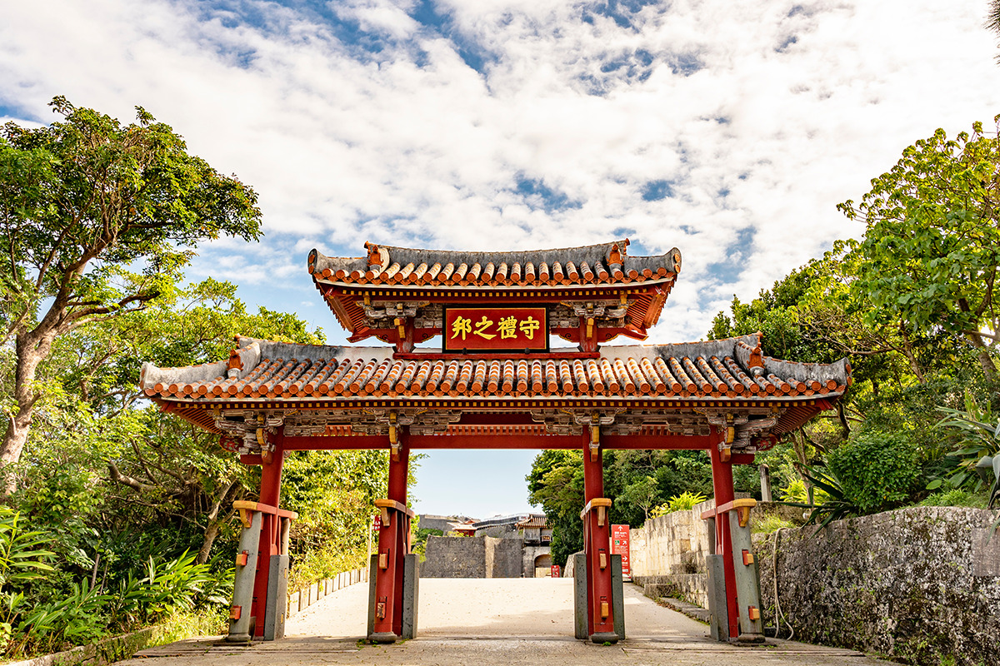
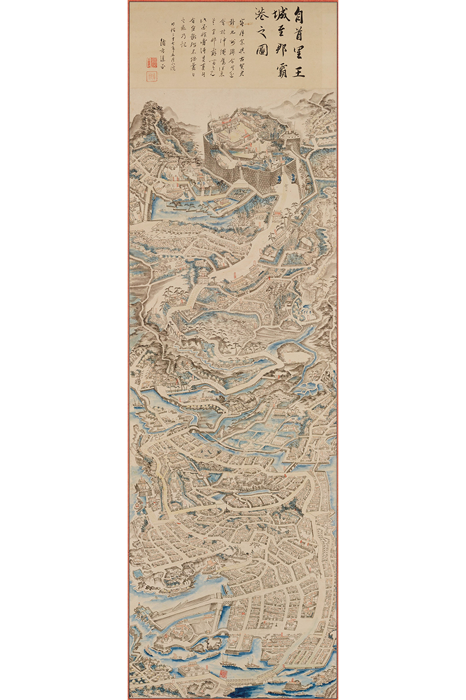
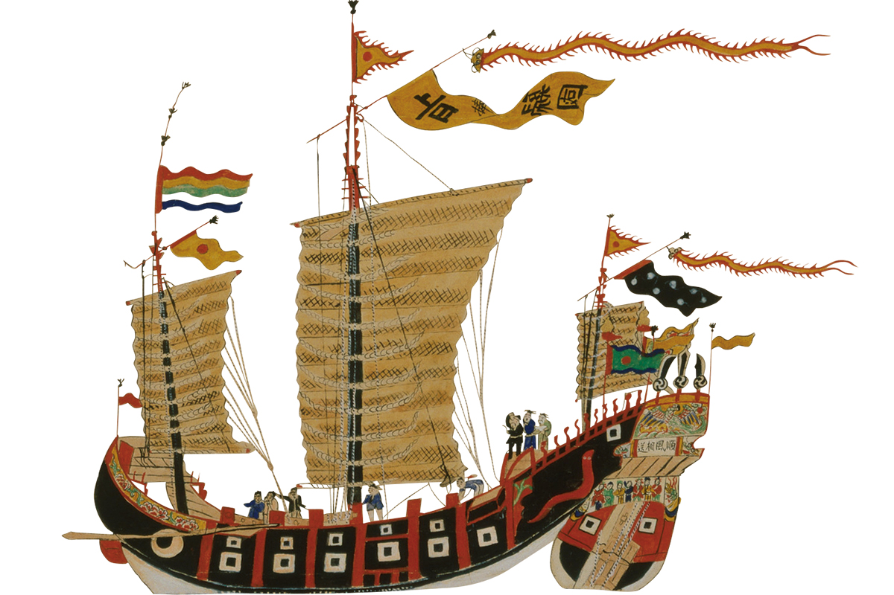
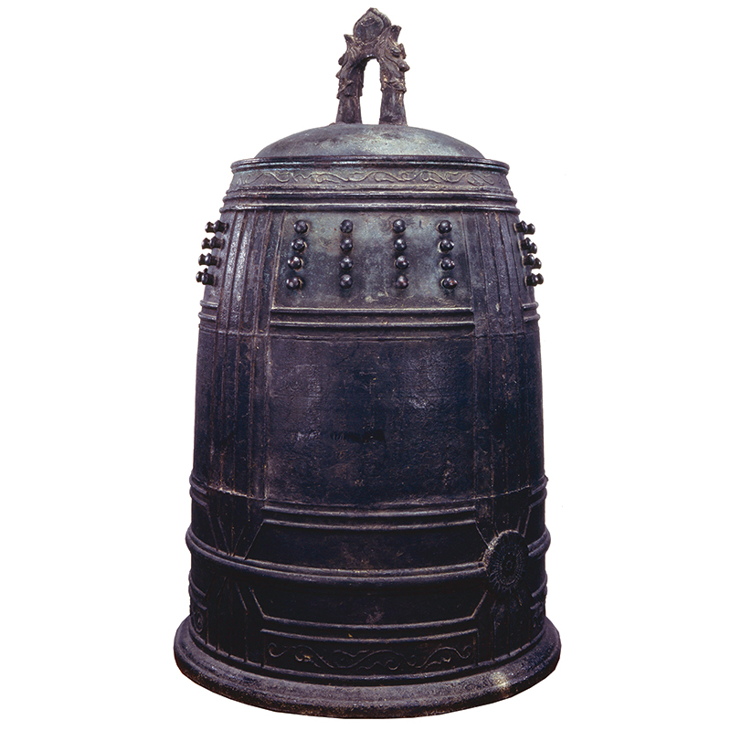
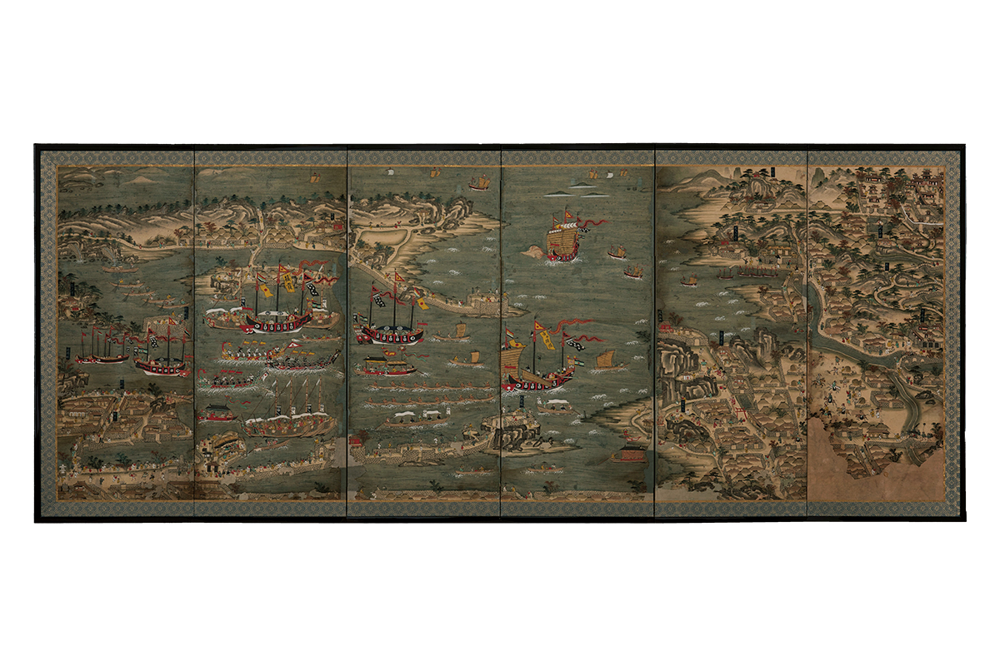

Префектура Окинава · Наха и Сюри · история
Королевство Рюкю: как маленькое островное государство стало мостом между Китаем, Японией и Юго-Восточной Азией

Около 450 лет, с XV по XIX век, на островах между Кюсю и Тайванем существовало королевство Рюкю. Своих ресурсов у него почти не было, зато были корабли, удобное положение и умение торговать со всеми сразу.
Начало
Три царства и один король
Острова Рюкю тянутся примерно на 1000 километров между Кюсю и Тайванем. В XII–XIII веках здесь начали строить гусуку. Обычно это слово переводят как «замок», но гусуку была и крепостью, и поселением, и местом обрядов: почти в каждой есть место для молитвы. Вокруг них появились адзи, местные правители, которые объединяли окрестные деревни.
На острове Окинава эти силы постоянно воевали и сливались друг с другом. К 1380-м годам остались три крупных царства: Санхоку на севере, Тюдзан в центре и Саннан на юге. Этот период называют эпохой трёх царств.
Конец ему положил адзи крепости Сасики на юге острова. Король Сё Хаси в 1406 году сверг правителя Тюдзана, затем подчинил Санхоку и Саннан, и в 1429 году появилось единое королевство Рюкю. Сё Хаси обустроил замок Сюри и порт Наха как символы новой страны. Почти 450 лет замок оставался дворцом, где жили король и его семья, и одновременно центром политики, хозяйства и культуры.

В XV веке королевство простиралось от острова Амами-Осима на севере до Ёнагуни на юге.
Торговля
«Мост между десятью тысячами стран»
Торговать с Китаем и Юго-Восточной Азией на островах начали ещё до эпохи гусуку. Но в 1371 году китайская империя Мин запретила частную морскую торговлю. Остался только обмен по системе сакухо: страна признавала себя вассалом императора, отправляла ему дань и получала взамен ответные дары. Короли всех трёх царств Окинавы стали отправлять дань в Мин.
Мин отвечала Рюкю на редкость щедро. Посольства разрешалось присылать сколько угодно, империя бесплатно давала большие морские суда и присылала людей, знавших дипломатию и навигацию. В 1372 году отношения стали официальными, и Рюкю почти монопольно заняло место посредника: везло в Китай товары Японии и Юго-Восточной Азии, а китайские товары развозило дальше.
После объединения торговля стала делом самого государства. В Китай везли рюкюскую серу, лошадей и раковины тюрбо. Обратно получали фарфор и шёлк и перепродавали их в Японию, в Сиам, Малакку, на Суматру. Перец и сапановое дерево из Юго-Восточной Азии шли в Китай и Японию, японские мечи, веера и ширмы в Китай и Юго-Восточную Азию. Рюкюские корабли доходили до Кореи, Аннама (Вьетнам), Маджапахита на территории нынешней Индонезии и острова Лусон на Филиппинах.

Около двухсот лет королевство было торговым узлом азиатских морей и пережило золотой век со второй половины XV до XVI века.
Колокол с гордой надписью
Лучше всего о том, как королевство себя видело, рассказывает бронзовый колокол 1458 года. Его отлили по приказу Сё Тайкю, шестого короля первой династии Сё, ревностного буддиста, и повесили в главном зале замка Сюри. Надпись на нём составил настоятель буддийского храма Сококудзи, который стоял на территории королевства.

«Рюкю это прекрасная земля в южных морях», начинается надпись. С Китаем королевство связано, как колесо и опора, с Японией, как губы и зубы. Оно лежит между двумя странами как рай, «кораблями становится мостом для десяти тысяч стран», и вся страна полна редкостей и сокровищ. Слова «банкоку-но синрё», «мост для всех стран», окинавцы, утинантю, любят повторять и сегодня.
Это не было пустым хвастовством. Ресурсов у Рюкю было мало, но страна стояла там, откуда можно дотянуться до всей Азии, и умела строить корабли. Историку особенно трогательно, что в надписи честно сказано: сокровища в стране заморские, а не свои.
Порт
Наха на старой ширме

Живущие на Окинаве часто слышат от приезжих: здесь что-то китайское, замок Сюри похож на корейскую историческую дораму, рынки напоминают Юго-Восточную Азию, а священные рощи утаки хранят дух древнего синто. Объяснение простое: это была не Япония, а другая страна, Рюкю. И ширма «Торговый порт Рюкю» показывает это нагляднее всего.
Посмотрите на рюкюское торговое судно вверху третьей створки справа. У его борта видно размытое пятно: это дым. Корабль благополучно вернулся домой и дал приветственный залп. Против пиратов рюкюские суда несли пушки, а салютовали, разумеется, без ядер. На залп из порта выходили лодки и, как нарисовано чуть ниже, буксировали судно к причалу.
Корабли привозили из Японии, Китая, Кореи и Юго-Восточной Азии лучшие вещи и знания, по словам историка, как сегодня привозят новейший смартфон. Весь город ликовал. Этот шум до сих пор слышен в весёлой мелодии «Тосэн дои», которой на Окинаве завершают праздничные застолья: «корабль вернулся!». Культуры разных стран складывались здесь в мозаику, переделывались под себя и за долгие века срослись так, что швов уже не видно.
В корейских летописях XV века описан китайский квартал Нахи, китайские купцы и японцы, заходили сюда и суда из Сиама. Порт с ширмы существует и сейчас. По дороге из аэропорта Наха в город, если ехать поверху, а не через тоннель, слева за сеткой забора виден порт внутри американской базы. Местные зовут его «военным портом Наха», а когда-то он был таким же шумным, как на ширме. После войны сюда пришла ещё и американская культура и тоже растворилась в местной.
Малакка
Бенгальские ткани для Японии
С кем же дружили в «десяти тысячах стран»? Например, с султанатом Малакка. В «Рэкидай хоан», собрании дипломатических документов Рюкю, сохранилась копия письма малаккского правителя 1480 года: страны были в дружбе, и торговля у обеих шла хорошо. В Малакку с муссонами приплывали и индийские купцы, это был большой рынок.
Португальский путешественник Томе Пиреш в «Сумме Востока» записал, что люди с Рюкю приплывают почти каждый год и скупают много бенгальской ткани, а потом везут её не домой, а в Японию, до которой «семь-восемь дней пути». Бенгалия это земли нынешнего Бангладеш, и её ткани, которые сегодня называют старинным индийским ситцем сараса, славились окраской и выделкой.
В 1511 году Малакку захватила Португалия, и упоминания о ней в рюкюских документах обрываются. Наступала эпоха Великих географических открытий, Лусон стал испанским, а Филиппины получили имя в честь короля Филиппа II. Торговля Рюкю с Юго-Восточной Азией пошла на спад, Япония закрылась от мира, а мир двинулся к современному капитализму.
Династии
Две семьи Сё и 450 лет событий
У королевства было две династии. Первую династию Сё основал отец Сё Хаси, Сё Сисё, она правила 63 года при семи королях, до Сё Току. Вторая началась в 1470 году с Сё Эна и дала 19 королей за 410 лет, последним был Сё Тай. В 1879 году, после того как Япония заменила княжества префектурами, король передал замок Сюри.
Главным потрясением был переворот после смерти Сё Току, седьмого короля первой династии. На трон взошёл не его сын, а высокопоставленный сановник Канамару, ставший королём Сё Эном. Кровного родства между династиями не было, но новая продолжала носить фамилию Сё. Считается, что так она показывала Китаю законность наследования и сохраняла лицо государства. Саму фамилию Сё, по одной версии, в начале XV века пожаловал китайский император, по другой, это иероглифы, подобранные к рюкюскому имени.
Были и другие бурные эпизоды. При восшествии на трон Сё Сина жрицы, ссылаясь на волю богов, устроили немалый переполох. А когда трон занимал Сё Кэй, тринадцатый король второй династии, между двором и прибывшими из Китая послами сакухоси случился серьёзный спор, и уладил его сановник Сай Он. О королях и сановниках подробнее рассказано в отдельном материале о личностях Рюкю, о послах и жрицах тоже.
В XVII веке на Рюкю вторглись войска княжества Сацума во главе с родом Симадзу. Королевство вошло в японскую систему княжеств, но не прервало вассальных связей с Китаем. Оказавшись между двумя соседями, Рюкю смешало их культуры и создало свою. Этот дух окинавцы называют «тямпуру», по названию блюда, где всё перемешано.
Где увидеть
Колокол, ширма и замок
В 2022 году, к 50-летию возвращения Окинавы Японии, в Токийском национальном музее и Национальном музее Кюсю прошла большая выставка «Рюкю», где показывали и колокол 1458 года.
Колокол хранится в Музее префектуры Окинава в Нахе, ширма «Торговый порт Рюкю» в Художественном музее Урасоэ. Замок Сюри, откуда правили обе династии, и бывший порт Наха, который можно увидеть по дороге из аэропорта, стоят в самом городе.
Музей префектуры Окинава
- Адрес
- префектура Окинава, Наха, Оморомати, 3-1-1
- Сайт
- okimu.jp
Художественный музей Урасоэ
- Адрес
- префектура Окинава, Урасоэ, Накама, 1-9-2
Фото: koichi.